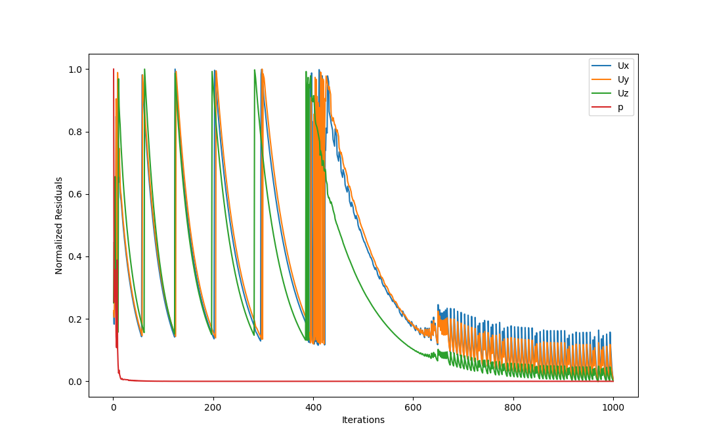

Laminar flow simulation of a kenics helical static mixer

Description: Flow and mixing analysis of a Kenics helical static mixer with 6 elements.
Reference Paper: Laminar flow in static mixer with helical elements
Model
The model geometry consists of 6 helical mixing elements of length 0.03 m each within a pipe of diameter 0.02 m and height 0.24 m
This means a clearance of one element length at the start and end of the flow.
Each mixing element has one twist of 180o.
The model was created using FreeCAD and the patches were exported as STL files and kept in the "./constant/triSurface" folder
Meshing
Meshing was perfomed using snappyHexMesh in OpenFOAM. This meshing technique produces mostly hexahedral elements with optional refinement around specified surfaces.
The geometry was exported in STL format.
Separate STL files were created for the inlet, outlet, walls and the entire volume.
The resulting mesh had 5789599 points and 4453943 cells.
The following patches were created : inlet, outlet & walls
Physics
The incompressible Navier-Stokes equations were solved in OpenFOAM for a laminar flow case since for the simulation, Re = 10.
The Mass conservation equation is given by
$$ \frac{\partial u}{\partial x} + \frac{\partial v}{\partial y} + \frac{\partial w}{\partial z} = 0$$
The steady-state Momentum conservation equations in x, y & z directions are
$$ y: u\frac{\partial v}{\partial x} + v\frac{\partial v}{\partial y} + w\frac{\partial v}{\partial z} = -\frac{1}{\rho}\frac{\partial P}{\partial y} + \nu\left(\frac{\partial ^2 v}{\partial ^2 x} + \frac{\partial ^2 v}{\partial ^2 y} + \frac{\partial ^2 v}{\partial ^2 z} \right)$$
$$ z: u\frac{\partial w}{\partial x} + v\frac{\partial w}{\partial y} + w\frac{\partial w}{\partial z} = -\frac{1}{\rho}\frac{\partial P}{\partial z} + \nu\left(\frac{\partial ^2 w}{\partial ^2 x} + \frac{\partial ^2 w}{\partial ^2 y} + \frac{\partial ^2 w}{\partial ^2 z} \right)$$
Simulation
The case was simulated using OpenFOAM.
The inlet flow velocity was set to 0.01 m/s in the length direction (z) and the internal flow field was initialized with the same velocity
Boundary Conditions
| Parameter | Inlet | Outlet | Walls |
|---|---|---|---|
| Velocity | uniform (0 0 0.01) | zeroGradient | noSlip |
| Pressure | zeroGradient | uniform 0 | zeroGradient |
The steady-state simulation was run for 1000 iterations using the SIMPLE algorithm.
The residual plot is shown below with final residuals being in the order of 10-8

As it can be seen from the residual plot. Although the pressure residuals get reduced fast and stabilize quickly, the velocities oscillate between 1.0 to about 0.1 of the maximum values.
After about 600 iterations, the velocity residuals oscillate about a lower mean value and the solution can be considered to be converged.
Validation
Results were validated against the aforementioned reference paper.
The pressure drop across the static mixer was 14.5 Pa which is very similar compared to the reference pressure drop of 14.4 Pa
This provides a good enough quantitative validation but some more qualitative flow characteristics are also compared with the reference.
Back to Database